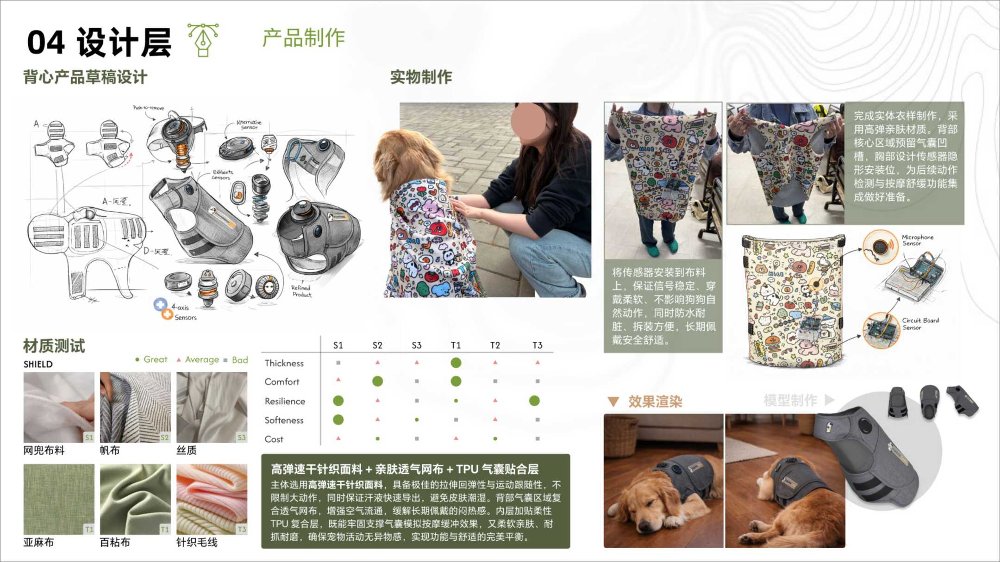
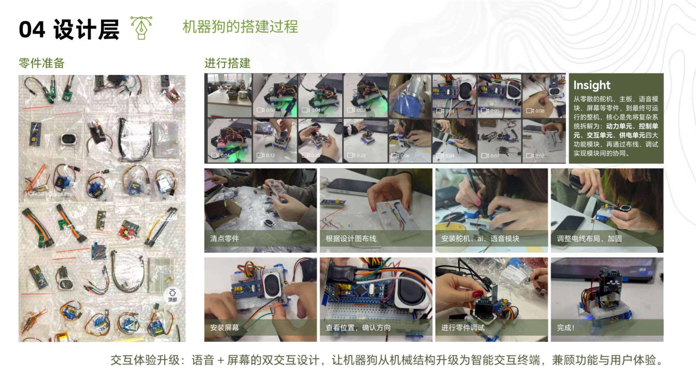

04
信息处理与数据采集
Information Processing & Data Collection
HARDWARE & DATA
01
信息处理三步流程
多模态数据融合
STEP 1
量化行为
音频/视频/加速度采集
→
STEP 2
特征提取
MFCC肢体动作/运动强度
→
STEP 3
数据分析
人工标注+机器学习分类
💡
通过多模态数据融合，将宠物的行为、声音、生理信号转化为可分析的情绪特征，建立"动作-声音-情绪"的对应关系。
02
硬件原型展示
可穿戴背心 + 桌面机器人

🐱 可穿戴背心
六轴加速度传感器 + 麦克风阵列 + 心率监测

🤖 桌面机器人
ESP32主控 + 舵机互动 + LED情绪灯 + 扬声器
03
行为与生理数据采集全流程
4个阶段
1
Phase 1 · 破冰与基线状态采集
以熟悉的日常互动建立信任，引导宠物进入放松状态，采集基线状态下的肢体动作、叫声、生理数据。
2
Phase 2 · 行为与情绪关联数据采集
分时段采集进食、玩耍、放松等不同场景下的完整数据，同步记录六轴传感器捕捉的肢体运动数据、声音特征。
3
Phase 3 · 多场景行为与交互数据采集
设计多元互动场景，采集不同情绪下的完整数据，同步采集不同情绪下的叫声特征、肢体动作的传感器数据。
4
Phase 4 · 数据复盘与设计落地收尾
对全天采集的六轴传感器、音频数据进行分类整理，完成情绪与行为的对应标注，形成完整数据集。
04
核心传感器配置
6种传感模块
六轴加速度计
MPU6050 · 100Hz采样
麦克风阵列
INMP441 · 16kHz采样
心率监测
MAX30102 · 光电式
体温传感器
DS18B20 · ±0.5°C
扬声器模块
MAX98357 · I2S接口
LED情绪灯
WS2812B · 全彩RGB
数据来源：六轴加速度传感器、麦克风阵列、视频录制、人工标注 · 样本量 N=1,247 条 · 2026.04